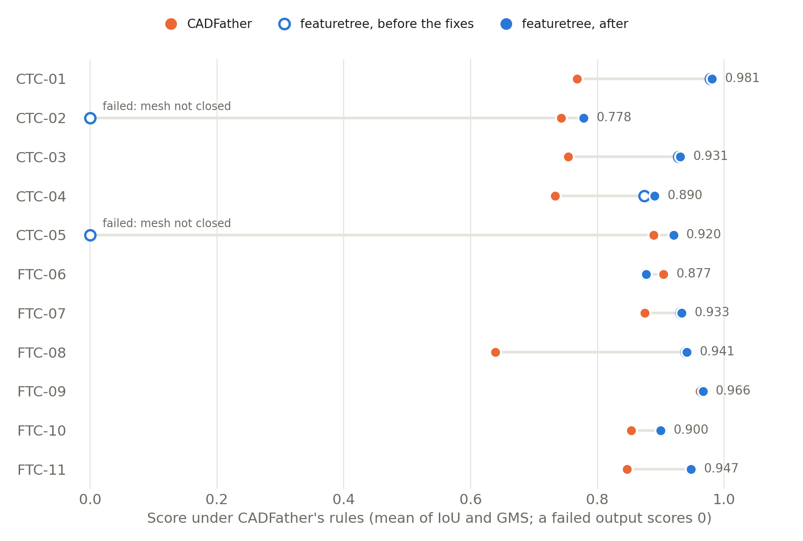

Yesterday we scored featuretree's recovered trees for the eleven NIST test parts with CADFather's metric code. That code starts from a triangle mesh, as a slicer or a simulation would, and it found defects our own checks had not reported: two rebuilt solids that did not mesh closed, sealed voids, and parts that came back in pieces. This post is what we did about them.
A check that meshes the result
featuretree verifies a recovered tree by rebuilding it and comparing volume, size and overlap with the input. None of those looks at the solid the way a mesh consumer does. We added a fourth test. It counts the separate solids, counts the enclosed voids, and meshes the solid to see whether every mesh edge is shared by exactly two triangles. A tree can no longer be VERIFIED unless the rebuilt solid is one closed body like its input.
Run on the eleven trees as they stood, the check reported more than the comparison had. Three meshes were open, where we had found two. Five parts held voids, where we had reported one. No VERIFIED verdict changed: the three VERIFIED parts were clean.
What was wrong
- Holes that stopped just short. Depths were rounded to the nearest tenth of a micron, and holes were placed at the heights where the input was measured, while the layers they cut through were stacked by their rounded lengths. On FTC-07 four blind holes ended 0.03 microns below the top face. The skin left over each one sealed it into a void. Holes are now placed where the layers are built, and cuts are rounded outward.
- Faces a tenth of a micron wide. A sketch states an arc by two endpoints and a bulge, to a fixed number of digits, so an arc lands within about 0.06 microns of the circle it was fitted to and not on it. Where the next layer used the true circle, the exact Boolean kept the difference as a ring-shaped face 0.06 microns wide. The mesher skipped those faces and left their edges open. On CTC-05 that was 180 open edges. The reference build now treats faces closer than 0.1 micron as the same face.
- A fuse that returned nothing. With that tolerance on, one layer of CTC-02 fused to an empty shape at every setting we tried. The same layer sunk 10 nanometres into the part fuses. The build retries that way, and if a tolerant build still fails anywhere, the whole part is rebuilt with exact Booleans and says so.
The NIST parts, scored again

| Part | Features | Solids | Voids | Mesh closed | IoU before | IoU now | Score now | CADFather score |
|---|---|---|---|---|---|---|---|---|
| CTC-01 | 54 | 1 | 0 | yes | 0.999 | 0.999 | 0.981 | 0.768 |
| CTC-02 | 144 | 1 | 16 | yes | failed | 0.928 | 0.778 | 0.743 |
| CTC-03 | 64 | 5 | 0 | yes | 0.943 | 0.944 | 0.931 | 0.754 |
| CTC-04 | 108 | 3 | 0 | yes | 0.965 | 0.990 | 0.890 | 0.734 |
| CTC-05 | 57 | 1 | 0 | yes | failed | 0.979 | 0.920 | 0.889 |
| FTC-06 | 31 | 1 | 0 | yes | 0.980 | 0.980 | 0.877 | 0.904 |
| FTC-07 | 30 | 1 | 0 | yes | 0.956 | 0.957 | 0.933 | 0.874 |
| FTC-08 | 66 | 1 | 0 | yes | 0.986 | 0.985 | 0.941 | 0.639 |
| FTC-09 | 80 | 1 | 0 | yes | 0.997 | 0.997 | 0.966 | 0.962 |
| FTC-10 | 38 | 1 | 0 | yes | 0.972 | 0.972 | 0.900 | 0.853 |
| FTC-11 | 2 | 1 | 0 | yes | 0.995 | 0.995 | 0.947 | 0.847 |
| Mean | 11 / 11 | 0.977 (9 parts) | 0.975 | 0.915 | 0.815 |
All eleven outputs are now valid under CADFather's rules, where nine were. With failures counted as zero, featuretree's mean score goes from 0.759 to 0.915. CADFather's is 0.815, from the same run as yesterday. The caveats from that post stand: CADFather starts from a mesh and writes at most twelve operations, and featuretree starts from the exact solid and writes up to 144 features.
Still wrong
Three parts are not one clean body. We looked at each and did not find a general fix, so they are left as they are. The new check reports all three, and none of them is VERIFIED.
- CTC-03 rebuilds as five solids. It is a sheet-metal part with walls under 2 mm thick, sliced into 31 layers across its bends. Some layers do not connect to their neighbours.
- CTC-04 has two feet detached from the body. The layer between them and the body came out without those two regions, and we have not found why.
- CTC-02 holds 16 sealed hole segments. Some bolt holes are found in the layers above and below a layer but not in it. CADFather's metric treats such voids as filled, which is part of why this part scores as well as it does.
Files with more than one body
A STEP file can hold several solids. featuretree used to take the first one, recover a tree for it, check the tree against that solid alone and report VERIFIED. It now takes the largest solid, says how many it left out, and never reports VERIFIED for such a file. Recovering every body is not done.
DeepCAD and Fusion360
CADFather's paper reports results on the DeepCAD and Fusion360 test sets. We ran featuretree on random samples of both: 1,000 of 8,027 DeepCAD parts and 500 of 1,725 Fusion360 parts, each scaled so its largest dimension is 100 mm.
| DeepCAD (1,000) | Fusion360 (500) | |
|---|---|---|
| No output (crash or time limit) | 2 | 1 |
| Mean IoU, all parts with an output | 0.974 | 0.916 |
| Files with one solid | 963 | 429 |
| VERIFIED | 914 | 383 |
| Mean IoU | 0.995 | 0.985 |
| Files with several solids | 35 | 70 |
| Mean IoU against the whole file | 0.41 | 0.49 |
| Rebuilt solids that mesh closed | 994 of 998 | 492 of 499 |
| Median operations per tree | 1 | 2 |
| Median time per part | 19 s | 21 s |
The paper's figures for CADFather are a mean IoU of 0.987 on DeepCAD and 0.976 on Fusion360, on the full sets, with every output valid. They are not directly comparable with ours. CADFather's input is a mesh and ours is the exact solid. The IoU here is our own measure, taken by sampling points against the solids, and not CADFather's code. Ours are samples. The paper computes IoU only for targets that are a single closed solid, which is closest to our single-solid rows.
Two things stand out. Files with several solids are 3.5% of the DeepCAD sample and 14% of the Fusion360 sample, and on those featuretree recovers one body and scores under 0.5. And these parts are much simpler than the NIST ones: the median input has 8 to 10 faces.
A newer geometry library
featuretree was developed on build123d 0.8, and did not run on the current 0.13, which also moves to a new major version of the OpenCASCADE kernel. It now passes its tests on both. One fix there changed a number we had published: on CTC-01 the recogniser now reports one residual lump left uncut, not two. The second was the kernel handing back the whole part as a leftover, which the old version discarded by accident. The tree and its verdict are the same. The same fix made the recogniser pick a different tree for FTC-08, with 66 features where it had 37 and about the same overlap. The table above is from after that change.
What this does not show
- The tolerant Booleans are in our reference build only. FreeCAD and Onshape build the same trees with their own kernels, and we have not checked whether they produce the same sliver faces.
- The dataset runs are samples, run once, and were made before the 0.13 changes were merged. We re-ran the NIST parts after the merge and have not re-run the samples.
- Eight of the eleven NIST trees are still PARTIAL by our own checks, as before.
- Nothing here was opened and edited in a CAD program.
What's next
The three parts that are still in pieces or hollow. Recovering every body of a multi-body file. The full DeepCAD and Fusion360 sets, scored with CADFather's code as well as ours.
Who did what
We asked for the defects to be fixed and for the open items from the first post to be run. Claude found the causes, wrote the fixes and the check, and ran the evaluations. The defects were found with CADFather's metric code, which is its authors' work.
The check is mesh_check.py in punkfab/featuretree. Got a STEP file that should be an editable model? Start a project →